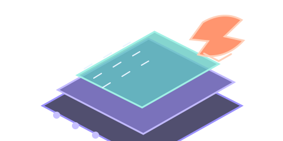
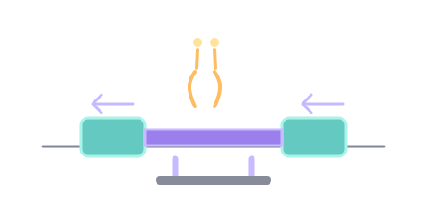
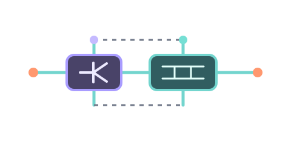
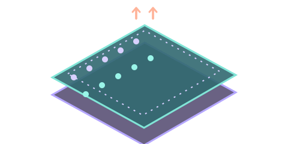
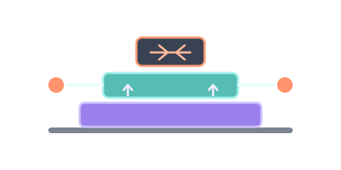
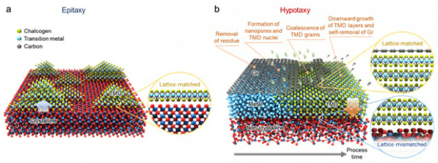

2차원 물질의 세계
원자 한 층 또는 몇 층으로 이루어진 2차원 물질은 얇은 두께와 독특한 결정·전자 구조를 바탕으로 새로운 물리 현상과 소자 가능성을 보여 줍니다. 이 장에서는 층상 결합, 대표 결정 구조, 주요 연구 분야를 먼저 살펴봅니다.
1.1.1원자층 물질은 무엇인가?
2차원 물질(two-dimensional material)은 한 원자층 또는 몇 개의 원자층으로 이루어진 얇은 결정입니다. 그래핀·h-BN·전이금속 디칼코제나이드처럼 대표적인 층상 반데르발스 물질에서는 층 안 원자들이 강한 화학 결합으로 연결되고, 층 사이는 상대적으로 약한 반데르발스 힘으로 붙어 있어 얇은 층을 분리하거나 서로 다른 층을 쌓기 쉽습니다. 단층에서도 안정한 구조를 이루는 물질이 많지만, 결합 방식과 표면 종단은 물질 계열에 따라 다릅니다.
얇은 두께는 게이트가 채널 전위를 제어하기 쉽게 해 초미세 트랜지스터 후보가 되며, 층수·적층 순서·기판·변형률을 바꾸면 광학·전기적 성질도 달라질 수 있습니다. 한편 결정 결함, 금속 접촉, 웨이퍼 규모 합성은 실제 소자 구현을 위해 해결해야 할 과제입니다.
층상 결합
층 내부 결합과 층간 결합의 세기가 달라 박리와 적층이 가능합니다.
원자층 두께
원자층 수준의 얇은 채널은 짧은 게이트에서도 전기장 제어를 돕습니다.
구조에 민감한 성질
층수, 결함, 적층과 주변 환경에 따라 물질의 응답이 바뀔 수 있습니다.
1.1.2결합과 결정 구조
원자가 반복되는 주기 배열을 결정 구조(crystal structure)라 합니다. 결정 구조는 반복 단위인 격자(lattice)와 그 격자점마다 배치된 원자들의 기저(basis)로 설명합니다. 2D 물질도 격자 대칭과 원자 기저가 달라지면 서로 다른 물질군과 성질을 갖습니다. 이어지는 페이지에서 격자와 밀러 지수를 살펴보고, 회절을 포함한 분석법은 제3장에서 다룹니다.
| 물질 계열 | 대표 구조·예 | 특징 | 연구 주제 예 |
|---|---|---|---|
| 탄소 단층 | 그래핀 · 벌집 격자 | 높은 전하 이동도, 영 밴드갭 | 고주파 소자, 센서, 투명 전극 |
| 육방정 절연체 | h-BN · 육방정 격자 | 넓은 밴드갭, 평탄한 표면 | 절연층, 캡슐화, 기판 |
| 전이금속 디칼코제나이드 | MoS₂, WSe₂ · X–M–X 층 | 반도체 밴드갭, 스핀·밸리 자유도 | 트랜지스터, 광전자 소자 |
| 흑린 | 주름진 벌집형 층 | 면내 방향에 따른 비등방성 | 편광 광검출, 이방성 전자소자 |
| MXene | 전이금속 탄화물·질화물 층 | 표면 종단기에 따라 성질 조절 | 전극, 센서, 에너지 저장 |
같은 조성의 전이금속 디칼코제나이드도 원자층의 대칭과 적층 방식에 따라 2H·1T 같은 다형(polytype)이 나타날 수 있습니다. 단층 MoS₂의 대표 구조에서는 황 원자층 사이에 몰리브데넘 원자층이 놓인 X–M–X 샌드위치 배열을 이룹니다. 격자와 결정면은 이어지는 페이지에서, XRD를 포함한 분석법은 제3장에서 자세히 다룹니다.
밴드갭과 격자상수로 보는 대표 소재
밴드갭이 없는 물질부터 넓은 밴드갭 절연체까지, 대표 구조를 한눈에 비교합니다.
2H-TMD의 범위는 bulk 간접 밴드갭에서 단층의 대표 광학 전이 에너지까지를 단순화해 표시했습니다. 서로 다른 시료 환경과 측정법에서 얻은 값이므로 정밀한 일대일 성능 비교가 아닌 대표 규모입니다. 격자상수는 육방정 면내 격자의 a 값이며, 물질·상·온도·변형률에 따라 달라질 수 있습니다.
1.1.3흑연에서 그래핀으로
2D 물질의 출발점은 연필심의 재료인 흑연(graphite)입니다. 흑연은 탄소 원자가 벌집 격자를 이룬 원자층이 AB 순서로 쌓인 결정이며, 층간 거리는 0.335 nm입니다. 2004년 맨체스터 대학의 가임(A. Geim)과 노보셀로프(K. Novoselov)는 접착 테이프로 흑연을 반복해서 떼어내는 기계적 박리로 단층 그래핀을 분리하고 그 전기적 성질을 측정했습니다. 이 업적으로 두 사람은 2010년 노벨 물리학상을 받았습니다.
흑연에서 그래핀으로
슬라이더를 움직이거나 자동 재생을 눌러 보세요전자가 두께 방향으로 움직일 수 없게 되면(양자 구속), 에너지 밴드 구조 자체가 바뀝니다. 그래핀에서는 유효 질량이 0인 디랙 페르미온이, MoS₂에서는 층수에 따라 달라지는 밴드갭이 나타납니다. 다음 반도체 물리 페이지에서 더 자세히 살펴봅니다.
1.1.4발견에서 양산까지
새로운 물질이 실험실에서 공장의 생산 라인에 오르기까지는 수십 년이 걸립니다. 2D 반도체 연구도 물성 탐색에서 대면적 성장과 공정 개발로 확장되고 있지만, 균일한 웨이퍼 제조와 기존 공정과의 통합은 계속 해결해야 할 과제입니다.
원자층 탄소 결정과 그래핀 연구의 출발
원자 몇 층 두께의 흑연 막을 분리하고 전기장 효과를 측정한 결과가 발표되며, 원자층 물질을 실험으로 다루는 연구가 본격화됐습니다.
Novoselov et al., Science (2004) ↗
TMD가 원자층 반도체와 소자 플랫폼으로 부상
단층 MoS₂의 직접 밴드갭 발광과 박막 트랜지스터가 보고되면서, 그래핀을 넘어 밴드갭을 가진 2D 반도체 연구가 빠르게 확장됐습니다.
Mak et al., Physical Review Letters (2010) ↗Radisavljevic et al., Nature Nanotechnology (2011) ↗
개별 트랜지스터에서 논리회로로
이중층 MoS₂ 위에 인버터, NAND, SRAM, 링 발진기를 구현해 2D 반도체가 여러 트랜지스터를 연결한 회로로 확장될 가능성을 보였습니다.
Wang et al., Nano Letters (2012) ↗
서로 다른 2D 층을 쌓는 반데르발스 이종접합
격자 맞춤의 제약을 줄이며 층별 기능을 조합하는 방식이 정립되어, 소재를 쌓아 설계하는 연구가 열렸습니다.
Geim & Grigorieva, Nature (2013) ↗
웨이퍼 규모 TMD 박막 성장
절연체 SiO₂ 위에 4인치 단층 MoS₂·WS₂를 직접 성장시키고 웨이퍼 규모 트랜지스터 제작을 시연했습니다. 작은 박리 조각을 넘어 공정 규모를 넓히려는 연구가 본격화됐습니다.
Kang et al., Nature (2015) ↗
강유전성과 강자성까지 기능이 넓어짐
초박막 CuInP₂S₆의 강유전성과 단층 CrI₃의 강자성이 보고되며, 반데르발스 물질은 전하·빛뿐 아니라 분극과 스핀을 다루는 플랫폼으로 확장됐습니다.
Liu et al., Nature Communications (2016) ↗Huang et al., Nature (2017) ↗
모아레 격자에서 상관 양자상태 발견
매직 앵글로 비튼 이중층 그래핀에서 초전도가 보고되며, 비틀림각으로 전자 밴드와 상관현상을 설계하는 모아레 연구가 크게 확장됐습니다.
Cao et al., Nature (2018) ↗
강유전체 반도체 자체를 채널로 쓰는 FeS-FET
α-In₂Se₃를 채널로 사용해 분극 상태가 채널 전도도를 바꾸는 강유전체 반도체 전계효과 트랜지스터(FeS-FET)가 보고됐습니다. 강유전체 게이트 절연막을 쓰는 FeFET와 구별되는 소자 개념입니다.
Si et al., Nature Electronics (2019) ↗
웨이퍼 규모 2D 트랜지스터 monolithic 3D integration
MoS₂와 WSe₂ 전계효과 트랜지스터를 웨이퍼 규모로 여러 층 쌓아, 서로 다른 회로층을 한 기판 위에 직접 만드는 3차원 집적을 시연했습니다.
Jayachandran et al., Nature (2024) ↗
Hypotaxy로 웨이퍼 규모 단결정 TMD 성장
그래핀 template의 나노구멍으로 성장 반응을 아래쪽 기판까지 전달해 4인치 단결정 MoS₂를 만들고, 저온 성장과 monolithic 3D integration 가능성을 보였습니다.
Moon et al., Nature (2025) ↗
1.1.52D 물질의 주요 연구 분야
전자소자
채널의 두께·접촉·결함을 조절해 초미세 FET와 센서의 성능을 높이는 연구입니다.
광전자·엑시톤
빛의 흡수·방출, 엑시톤, 광검출과 발광 소자를 탐구합니다.
스핀·밸리·트위스트로닉스
스핀과 밸리 자유도, 층간 비틀림으로 생기는 모아레 초격자와 상관 물성을 연구합니다.
합성·계면·측정
대면적 성장, 이종구조 조립, 결함 제어와 여러 분석법을 통한 품질 평가를 다룹니다.
1.1.6주요 연구 주제의 구성
이 사이트는 네 연구 분야와 하나의 도구 영역으로 구성됩니다. 제1부에서는 2D 물질과 결정 구조·격자, 결정면·밀러 지수, 반도체 물리와 밴드갭을 살펴봅니다. 제2부는 박막 증착과 박리·직접 합성, 에피택시·하이포택시를 포함한 합성을 다룹니다. 제3부는 XRD·Raman·TEM·XPS·AFM 등 분석법을 소개하고, 제4부는 반도체와 FET 및 차세대 소자 응용을 중심으로 구성됩니다. 모아레, 자성, 강유전성 같은 기능성 연구도 함께 다루며, 제5부에서는 논문 데이터와 용어 사전을 찾아볼 수 있습니다.
보라색 머리띠가 달린 상자는 값을 조절해 물리적 경향을 살펴보는 단순화 모형입니다. 극단적인 조건은 실제 성장·측정 범위를 뜻하지 않을 수 있으므로 각 모형의 설명과 한계를 함께 확인해 주세요.